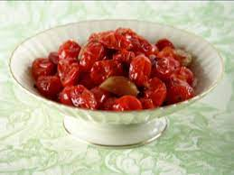

Oven Roasted Grape Tomatoes

Description
A side dish that's both wonderful and healthy, perfect for summertime.
It's a good idea use seasonal grape tomatoes, since their
flavor is the key to the unique taste of this side dish.
Excellent in both oven and grill.
Ingredients
-
1 lb of grape tomatoes, sliced in half
-
1 tbsp of olive oil
-
2 cloves of minced garlic
-
5 fresh chopped basil leaves
-
1 tbsp of chopped fresh thyme
-
salt to taste
Steps
-
Preheat oven to 350 degrees F (175 degrees C).
-
Place tomatoes onto a large square of aluminum foil. Drizzle olive oil over tomatoes and top with garlic, basil, thyme, and salt. Wrap the foil around tomato mixture sealing tightly to keep juices inside.
-
Bake in the preheated oven until tomatoes are tender, about 30 minutes. Cool slightly.